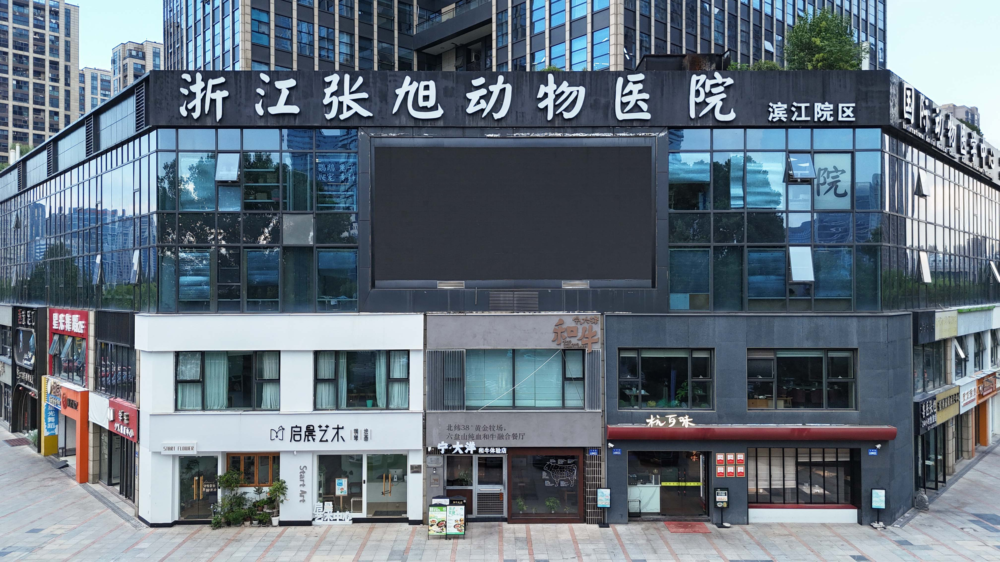
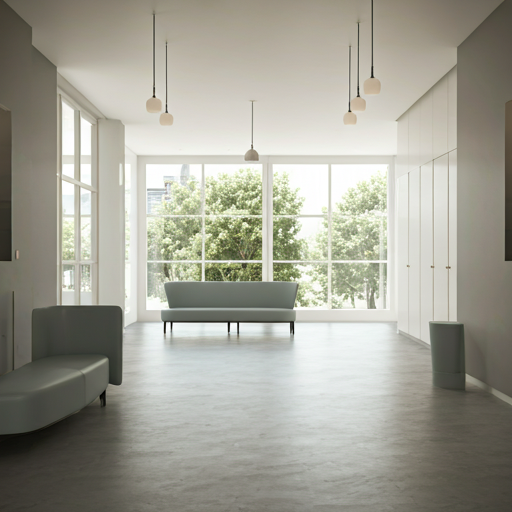
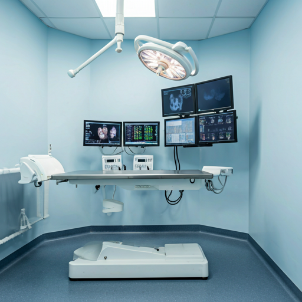
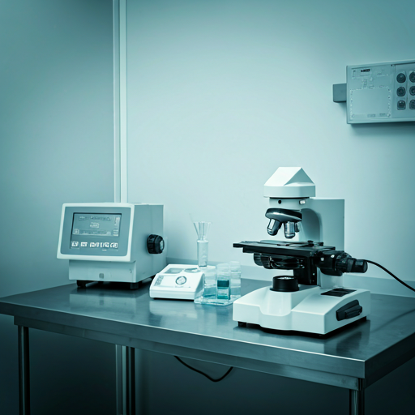
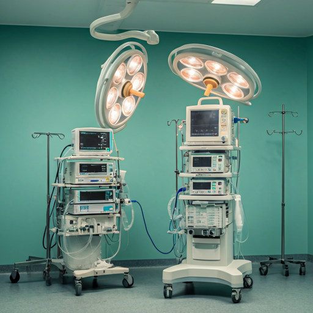

About Us
严谨，
即是关怀
扎根杭州，辐射全国。以临床卓越为基石，用精密技术与人文关怀，构建宠物医疗的新标杆。

浙江张旭动物医院自创立以来，始终坚持以“生命第一”为最高准则。每一个患病宠物背后，都是一份沉甸甸的托付——在张旭，医疗不仅是科学，更是一场严谨的修行。
我们持续引进核磁共振（MRI）、CT 等高精尖设备，为复杂病例提供精准诊断支撑，确保每一项决策都建立在客观数据与临床经验的交叉印证之上。
Core Principles
我们的核心价值
verified_user
医院使命
让专业医疗更值得托付。我们致力于消除医疗信息的不对称，通过技术革新与流程透明，让每一位宠主都能感受到专业带来的安心。
psychology
经营理念
专业
透明
耐心
负责
fact_check
诊疗准则
秉承“先评估，再判断”的医学逻辑。拒绝经验主义式治疗，坚持全方位临床评估，为爱宠制定个体化的最佳诊疗方案。
Hospital Environment
国际化的诊疗空间

舒适候诊区
宽敞独立空间，减少猫犬社交应激。

全科诊室
数字化诊察，实时同步病历与影像。

中心化检验室
国际领先的生化、血检自动化设备。

无菌手术室
万级层流净化，保障高难度手术安全。